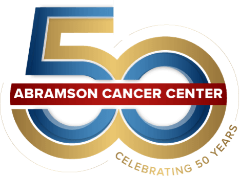

Our Work Continues
in a Time of Change

It is my great pleasure to welcome you to Penn's Abramson Cancer Center's progress report, spotlighting the Creativity, Collaboration & Community taking place throughout our network every day.
In these pages we celebrate the spirit of collaboration, which has always been at the core of everything we do. It is fitting that last year marked the 50th anniversary of the National Cancer Act, which brought together scientists, physicians, government and industry to combat cancer. And recent statistics illustrate the fruits of that labor. Just before the COVID-19 pandemic started, the United States saw the single largest drop on record-2.4%-in the rate of cancer deaths. The data give us fresh hope as our organization, like so many others, puts community outreach, health equity and racial justice at the top of our agenda to build healthier communities.

Watch our reflections on 50 years of cancer care at Abramson Cancer Center
This report focuses on the many initiatives we support, the issues we face and the progress we continue to make-including the National Institutes of Health (NIH) core grant renewal we received in January 2021, which came as we continued to persevere through a myriad of challenges. We were granted an "Exceptional" Comprehensive Cancer Center rating and a five-year, $45 million Cancer Center Support Grant award from the National Cancer Institute (NCI) for cancer research. This funding puts the Abramson Cancer Center among the top 10 cancer center support grant recipients in the country and powers us to use our creativity to drive discovery more quickly. It also helps Penn Medicine collaborate with scientists across the nation, enriching our efforts and contributing to the global fight against cancer.
Penn Medicine once again placed among the top hospitals in the nation in the U.S. News & World Report rankings-with its cancer programs being amongst the nation's top 10. Beyond the recognition, these accolades illustrate what our patients and families experience every day-the knowledge that they are receiving the very best care available.
Also helping us along the way is our trusted community of philanthropic partners who provide the resources to help us explore our ideas, realize our goals and improve the lives of so many. We are grateful for their generous support and invaluable investment in our work.
As the Abramson Cancer Center nears its own 50th anniversary, we remain united with our patients, families and the communities we serve to improve the lives of people with cancer and those at risk.